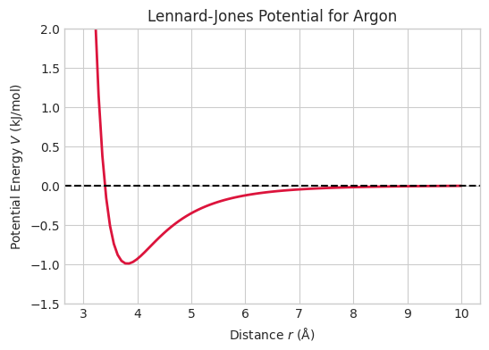

Welcome to Computational Chemistry! Before we dive into quantum mechanics and molecular dynamics, we need to ensure our basic computational tools are sharp. In this course, Python is our laboratory.
Today, we will review: 1. Data Storage: Lists vs. NumPy arrays. 2. Loops and Logic: Building grids step-by-step. 3. Functions: Writing reusable code for unit conversions. 4. Vectorization & Plotting: Calculating and visualizing chemical data efficiently. 5. Coordinate Math: Calculating atomic distances. 6. The Power of Libraries: Why we let scipy do the heavy lifting.
Click to see the library imports for this chapter
# 'np' and 'plt' are the universal standard nicknames for these librariesimport numpy as npimport matplotlib.pyplot as plt# Make our plots look professional (this is optional, but makes the output cleaner)plt.style.use('seaborn-v0_8-whitegrid')
4.1 1. Storing Data: Lists vs. NumPy Arrays
Before we do heavy math, we need to know how Python stores information. The most basic container is a List, which is simply an ordered collection of items enclosed in square brackets [].
Crucially, computers start counting at zero. The first item is at position (index) 0, the second is at 1, and so on. Let’s look at a list of atomic masses for the noble gases: Helium, Neon, and Argon.
Code
# A standard Python list noble_gas_masses = [4.00, 20.18, 39.95]# Accessing specific items using their indexprint("Mass of Helium (index 0):", noble_gas_masses[0])print("Mass of Neon (index 1):", noble_gas_masses[1])
Our entire list of masses: [4.0, 20.18, 39.95]
The mass of Helium (index 0) is: 4.0
The mass of Neon (index 1) is: 20.18
4.1.1 The Problem with Lists
Standard Python lists are great for holding stuff, but they are terrible at math. If you try to multiply a list by 2, it doesn’t double the numbers—it just duplicates the list!
Because computational chemistry requires doing math on thousands of numbers at once, we use a library called NumPy. A NumPy array looks just like a list, but it acts like a true mathematical vector.
In quantum mechanics, we often need to build a simulation space (a grid) and assign a potential energy value to every single point. We usually do this by creating an empty array of zeros, and then using a for loop to visit each point and change its value based on some physical rule.
Let’s build a simple 1D potential well.
Code
# 1. Pre-allocate an array of 5 zeros# We use np.zeros() because it's much faster than building a list one-by-oneV = np.zeros(5)print("Starting grid:", V)# 2. Iterate over the array using a for loop# range(5) generates the numbers 0, 1, 2, 3, 4for i inrange(5):# Let's say the boundaries (index 0 and 4) have a high energy wall of 10.0if i ==0or i ==4: V[i] =10.0print("Finished potential well:", V)

4.3 3. Creating Functions
If you find yourself doing the same calculation multiple times (like converting units), you should wrap it in a Function using the def keyword. A function takes an input, applies your logic, and returns the output.
Code
# Define a function to convert Hartrees (Atomic Units) to kcal/moldef hartree_to_kcal(energy_au): conversion_factor =627.509 energy_kcal = energy_au * conversion_factorreturn energy_kcal# Now we can use our custom function anywhereground_state_energy =-0.5# Energy of Hydrogen in Hartreesprint("Hydrogen energy in kcal/mol:", hartree_to_kcal(ground_state_energy))
The O-H bond length is 0.968 Å
The H-H distance is 1.526 Å
4.4 4. Vectorization and Plotting
While for loops are great for building complex custom grids, they are slow for basic math. numpy allows us to apply math to entire arrays at once (vectorization), which is orders of magnitude faster.
Let’s calculate the Lennard-Jones potential for Argon. This models the interaction between two neutral atoms as they approach each other: \[V(r) = 4\epsilon \left[ \left(\frac{\sigma}{r}\right)^{12} - \left(\frac{\sigma}{r}\right)^6 \right]\]
4.4.1 Deconstructing Matplotlib
Plotting code can look intimidating because it requires a lot of setup. Do you need all of it? No. The only strictly required commands are plt.plot() and plt.show(). Everything else is just to make the plot readable for humans.
Read the comments in the code block below to see exactly what each line controls.
Code
# Define parameters for Argonepsilon =0.997# kJ/molsigma =3.40# Angstroms# np.linspace creates an array of 100 evenly spaced points between 3.0 and 10.0r = np.linspace(3.0, 10.0, 100)# Calculate the potential for all 100 points instantly (Vectorization)V =4* epsilon * ((sigma / r)**12- (sigma / r)**6)# --- PLOTTING ---# OPTIONAL: Set the canvas size (width=6, height=4)plt.figure(figsize=(6, 4)) # REQUIRED: Plot the x and y data. We also add a color and line thickness.plt.plot(r, V, color='crimson', linewidth=2) # OPTIONAL BUT HELPFUL: # plt.axhline draws a horizontal line across the whole graph (useful for seeing where Energy = 0)plt.axhline(0, color='black', linestyle='--') # OPTIONAL: Labels and titles so people know what they are looking atplt.xlabel('Distance $r$ (Å)')plt.ylabel('Potential Energy $V$ (kJ/mol)')plt.title('Lennard-Jones Potential for Argon')# OPTIONAL: Zoom in on the y-axis to see the bottom of the well clearlyplt.ylim(-1.5, 2.0) # REQUIRED: Actually display the plot to the screenplt.show()
4.5 5. Working with 3D Coordinates
A massive part of computational chemistry is managing where atoms are in 3D space. The standard Euclidean distance \(d\) between two atoms at \((x_1, y_1, z_1)\) and \((x_2, y_2, z_2)\) is: \[d = \sqrt{(x_2 - x_1)^2 + (y_2 - y_1)^2 + (z_2 - z_1)^2}\]
Instead of writing that huge formula out, we use NumPy’s built-in linear algebra tool np.linalg.norm(), which calculates the length of a vector instantly.
Code
# Coordinates of a water molecule (x, y, z in Angstroms)oxygen = np.array([0.000, 0.000, 0.119])hydrogen_1 = np.array([0.000, 0.763, -0.477])# Subtracting the points gives a directional vector from Oxygen to Hydrogenbond_vector = hydrogen_1 - oxygen# The norm (length) of that vector is the bond distancebond_length = np.linalg.norm(bond_vector)print(f"The O-H bond length is {bond_length:.3f} Å")
4.6 6. The Power of Libraries (Don’t Reinvent the Wheel)
You might not have realized it, but you are already standing on the shoulders of giants. Every time you type import numpy or import matplotlib.pyplot as plt, you are loading thousands of lines of highly optimized code written by other scientists. You don’t write custom code to tell your computer monitor which pixels to color in to make a graph; you just let matplotlib do it.
In computational chemistry, we rely heavily on linear algebra. Let’s look at a classic example: calculating the determinant of a matrix.
For a simple \(2 \times 2\) matrix, doing this from scratch is easy. The determinant of a matrix \(\begin{pmatrix} a & b \\ c & d \end{pmatrix}\) is simply \((ad - bc)\).
Code
# A simple 2x2 matrixA = np.array([[3.0, 8.0], [4.0, 6.0]])# The "Hard Way" (Manual Calculation using array indexing)# Remember, Python counts from zero! A[row, column]a = A[0, 0]b = A[0, 1]c = A[1, 0]d = A[1, 1]det_manual = (a * d) - (b * c)print(f"Manual 2x2 Determinant: {det_manual}")
4.6.1 Scaling Up: The Nightmare of the 5x5
Now, what if we need the determinant of a \(5 \times 5\) matrix? The formula isn’t just a simple cross-multiplication anymore. Using standard mathematical expansion, a \(5 \times 5\) determinant expands into 120 different terms (\(5! = 120\)). If you tried to write a custom Python function to calculate that from scratch, it would require recursive loops, it would be slow, and you would almost certainly introduce a bug.
This is why we import SciPy (scipy.linalg). It contains matrix algorithms that have been perfected by mathematicians and computer scientists over decades. We don’t write complex math solvers from scratch; we let the libraries do the heavy lifting so we can focus on the chemistry.
Look at how SciPy handles that 5x5 nightmare in exactly one line of code:
Code
# Import the linear algebra module from SciPyimport scipy.linalg as la# Let's use numpy to quickly generate a random 5x5 matrix# (We use a set 'seed' so the random numbers are the exact same every time you run this)np.random.seed(42)B = np.random.rand(5, 5)# The "Library Way" (Works for any size matrix!)det_2x2_scipy = la.det(A)det_5x5_scipy = la.det(B)print(f"SciPy 2x2 Determinant: {det_2x2_scipy} (Matches our manual calculation!)")print("\nOur massive 5x5 matrix looks like this:")print(np.round(B, 2)) # We use np.round just to make it easier to read on screenprint(f"\nSciPy 5x5 Determinant calculated instantly: {det_5x5_scipy:.4f}")